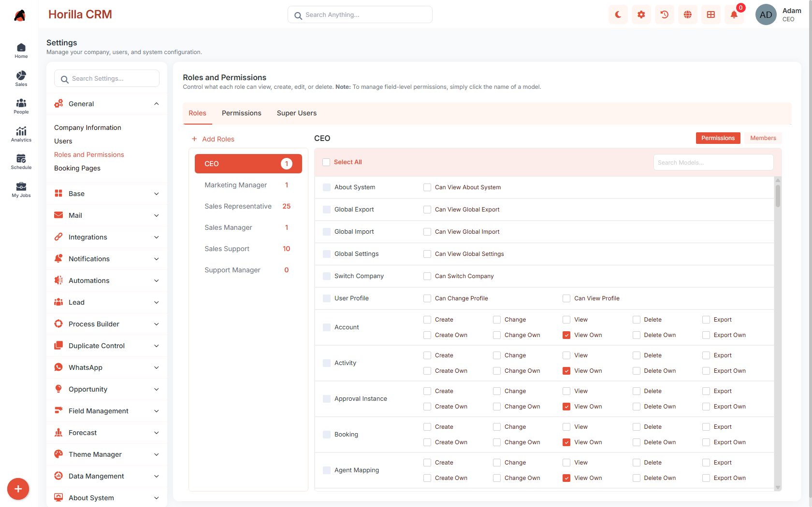
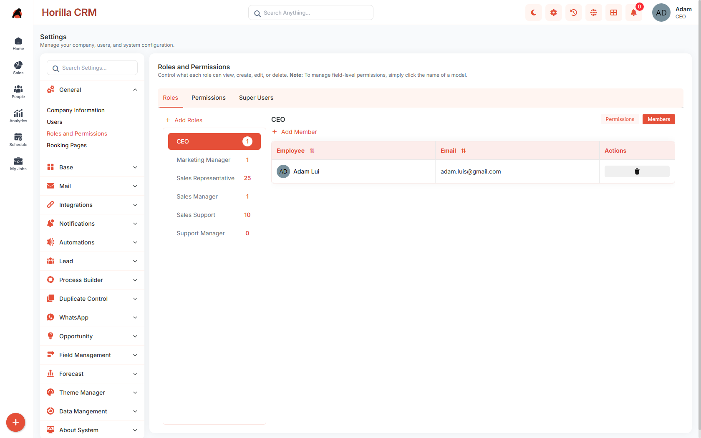
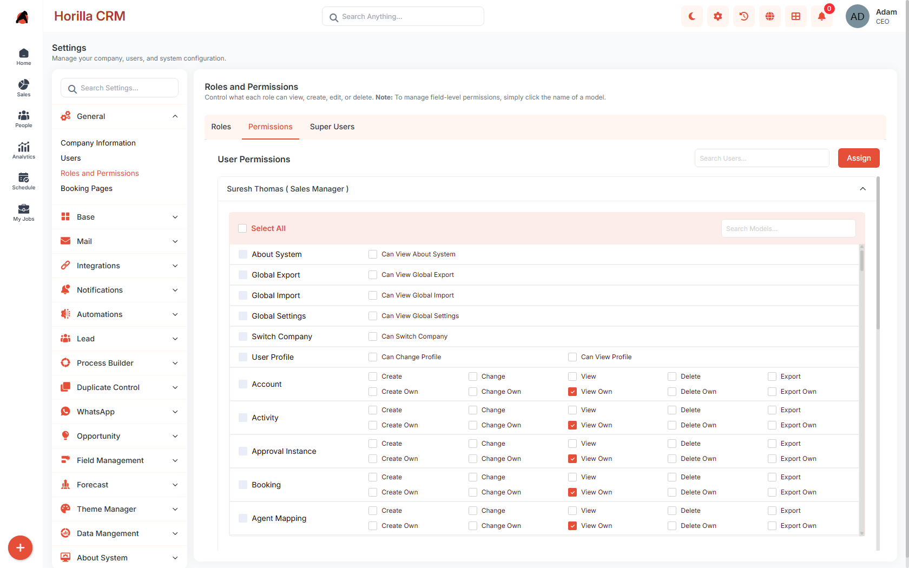
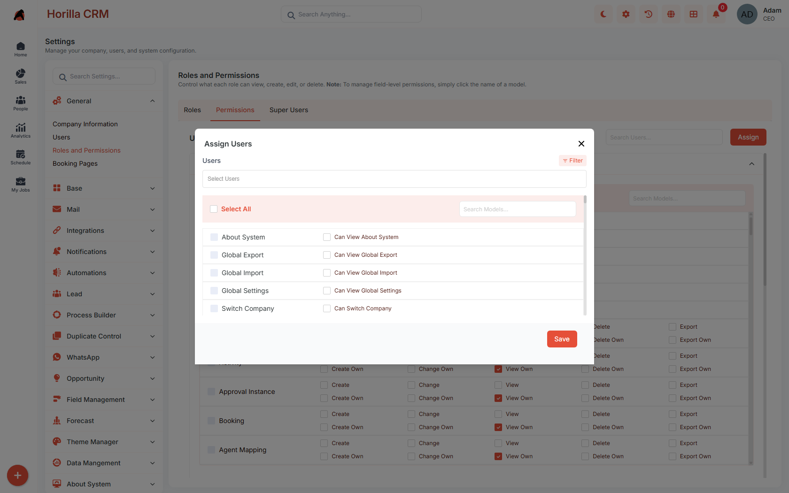
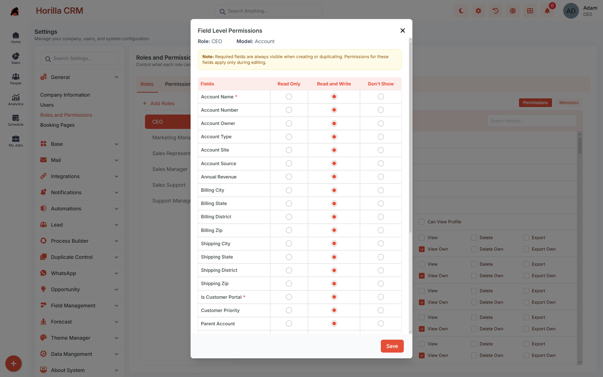
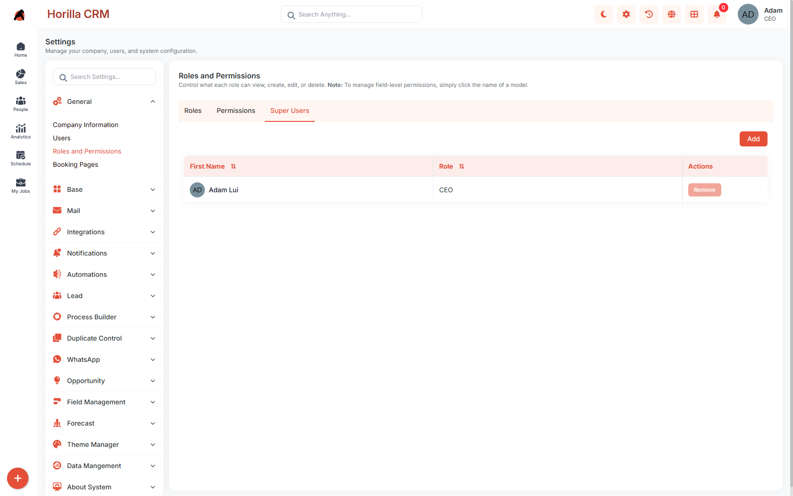

Introduction
Go to Settings → Roles and Permissions. The page title is Roles
and Permissions. The description is Control what each role can view, create,
edit, or delete.
The note on the page reads To manage field-level permissions, simply
click the name of a model.
Three tabs divide the page: Roles, Permissions and Super Users. Roles hold the shared permissions and the people in that role. The Permissions tab sets exceptions for one user, or for several users at once. Super Users bypass these limits.
Key Features and Functionalities
1. Roles Overview
Purpose: manage each organisational role and the permissions attached to it.
Access: Settings → Roles and Permissions → Roles.
- + Add Roles creates a role.
- The list shows every role and the number of members. Selecting a role opens its Permissions and Members switches. Permissions is selected by default.
- Select All checks every permission for that role. Search Models... filters the model list.
- A standard model has two rows: Create, Change, View, Delete, Export, then Create Own, Change Own, View Own, Delete Own and Export Own.
- Some system rows use one permission, such as Can View About System or Can Change Profile.
- A checkbox applies as soon as it changes. The checkbox beside a model name checks every permission on that row.
- Clicking the model name opens Field Level Permissions for that role.

2. Role Members Management
Purpose: manage the users that belong to the selected role.
Access: Roles tab → select a role → Members.
- + Add Member opens Add User to Role.
- The table columns are Employee, Email and Actions.
- The delete icon asks
Are you sure you want to delete the user from this role?

3. Permissions Overview
Purpose: assign permissions to one user, separately from the role.
Access: Settings → Roles and Permissions → Permissions.
- The heading is User Permissions. Super Users are not listed here.
- Search Users... filters the list. Assign opens the bulk dialog in the next section.
- Each row shows the user's name and role. Opening the row reveals Select All, Search Models... and the same permission checkboxes used on a role.
- A checkbox applies as soon as it changes. Clicking a model name opens Field Level Permissions for that user.

4. Bulk Permission Assignment
Purpose: assign the same permissions to several users at once.
Access: Permissions tab → Assign.
- The dialog title is Assign Users. Under Users, choose people in the Select Users field. Filter narrows that list.
- Select All and Search Models... work as they do on a role. Set the checkboxes for the models those users should have.
- Click Save to apply those permissions to every selected user.

5. Field Level Permissions
Purpose: choose whether each field is editable, read only, or hidden.

Access
-
For a role: Roles tab, select the role, then click a model
name. Models without field permissions show
Field permissions not available for this model
and do not open the dialog. - For a user: Permissions tab, open the user, then click a model name.
-
For several users: open Assign Users and click a model
name. With nobody selected, the dialog warns
No users selected. Please select atleast one user.
Permission types
| Permission | Effect |
|---|---|
| Read and Write | The field is visible and editable. |
| Read Only | The field is visible but cannot be edited. |
| Don't Show | The field is hidden completely. |
Field permission modal
The title is Field Level Permissions. The header names the Role, the User, or the count of Selected Users, and the Model.
- Columns are Fields, Read Only, Read and Write and Don't Show. A required field is marked with *.
- Save stores the choices. Nothing is stored until Save.
The dialog says Required fields are always visible when creating or duplicating.
Permissions for these fields apply only during editing.
Permission priority
Permissions are resolved in this order:
- User-specific permission
- Role permission
- Model default permission
- Read and Write, as the fallback default
Form behaviour
- Hidden fields are removed from the form.
- Read-only fields remain visible but are locked.
- Required fields stay visible during create and duplicate actions.
Bulk assignment
- On Assign Users, select the users, then click a model name.
- Save on Field Level Permissions writes the same field choices for every selected user.
Superuser access
- Superusers bypass all field-level restrictions.
- Every field stays visible and editable for them.
6. Super Users Management
Purpose: manage administrator accounts that bypass role, user and field permissions.
Access: Settings → Roles and Permissions → Super Users.
-
Add opens Add Super Users. The field is Users, with the placeholder Select Users and the help
Select one or more users to grant superuser privileges.
- The table columns are First Name, Role and Actions.
-
Remove asks
Are you sure you want to remove superuser status from this user?
At least one Super User must remain, so Remove stays disabled while only one Super User is listed.
